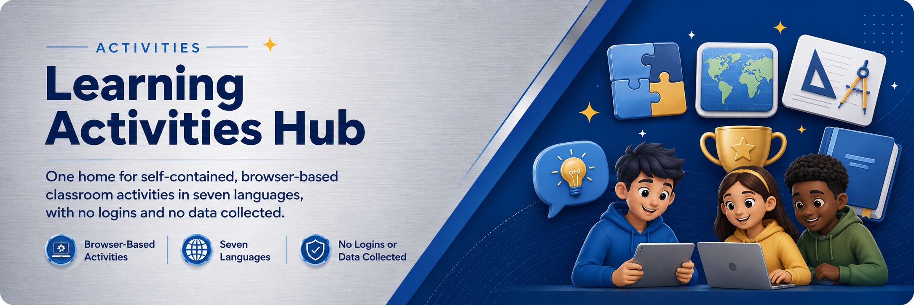

One home for self-contained, browser-based classroom activities — in seven languages, with no logins and no data collected. Pick an area to begin.
TEKS-aligned science investigations from light and shadows in Kindergarten through conservation of mass in Grade 8. Each grade includes a featured breakout, ten concept activities, a STEM challenge, and teacher supports.
Open Science Detectives →TEKS-aligned science lab-safety activities — rules of the room, PPE, emergency equipment, hazard symbols, Safety Data Sheets, GHS pictograms, chemical compatibility, and procedure critique. Students pass mastery checks to earn a printable Ranger or Specialist badge.
Start lab safety →The CTOB library — self-contained reasoning escapes where students open clues, weigh evidence, and crack the locks. Includes the CLEAR system, Fourth of July, July 5 & Black Freedom Holidays, Bible as Literature, Science, and Idioms, plus a searchable catalog.
Open the breakout library →Academic, nondevotional study of adopted Bible texts through story, history, genre, theme, archetype, and allusion. Students open clues, weigh evidence, distinguish text from belief, and crack the locks.
Open Bible as Literature →A searchable library of self-contained, browser-based math tools for every grade band, PreK through 12 — number lines, manipulatives, fraction bars, and more. Works offline; no logins, no data collected.
Open the math tools →A back-to-school worksheet collection for building classroom community — icebreakers and “all about me” activities across ELA, math, science, social studies, and fine arts, with printable PDFs. Aligned to the TEKS.
Open the worksheets →Problem-Based Learning units for the Texas history and social-studies classroom — real, ill-structured problems students work as stakeholders, built deliberately from surface to deep to transfer learning. Aligned to the social studies TEKS.
Open the PBL units →Investigation activities where students examine nine mystery exhibits in three steps — identify, understand, connect. Aligned to the Texas Essential Knowledge and Skills.
Enter the relic rooms →Breakout-style activities on being safe, kind, and responsible online — privacy, digital footprints, media balance, and standing up to unkindness — for the elementary and middle-grades classroom.
Open digital citizenship →Breakout-style activities that build a grounded understanding of generative AI — how it works, where it errs, and how to use it thoughtfully and ethically — for younger learners.
Open AI literacy →106 STEAM barrier & communication activities — one partner describes a hidden model, drawing, pattern, or setup in words only; the other builds it, then they compare. Filterable by STEAM strand, print-friendly, TEKS + NGSS aligned.
Open Say It, Make It →No areas match “”. Try another word, or browse all areas above.